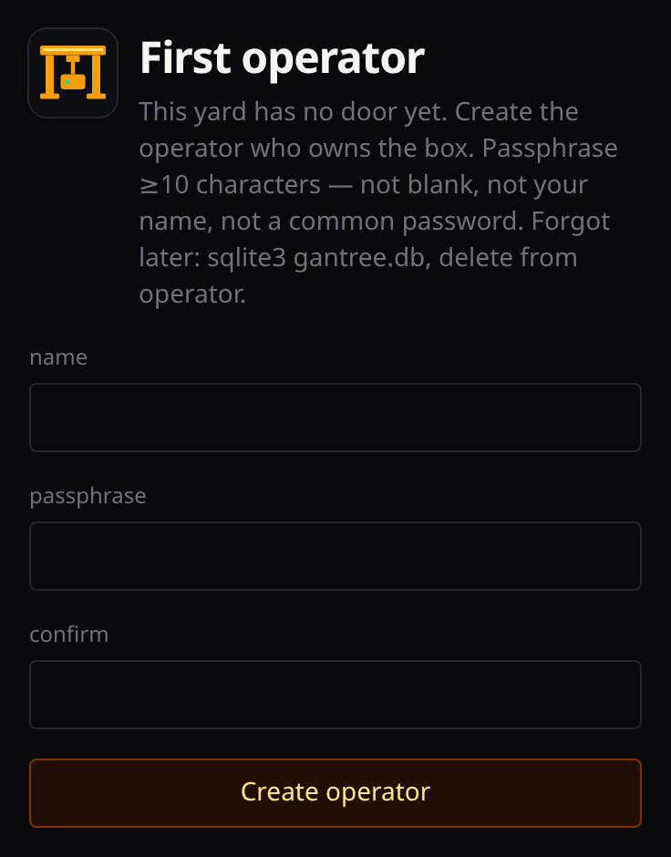
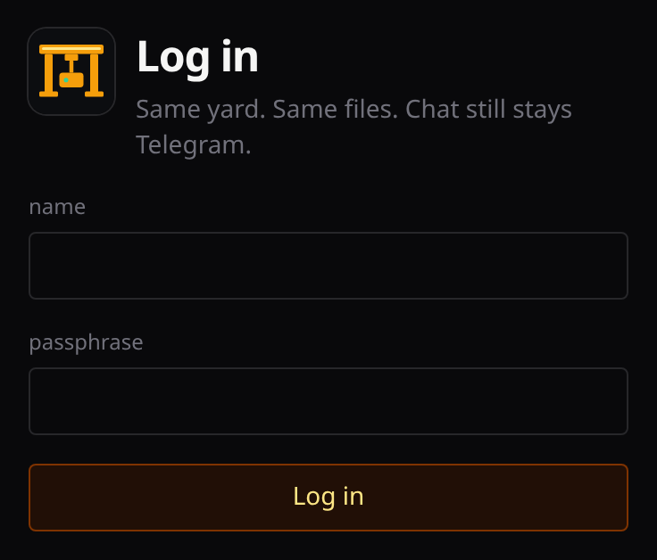
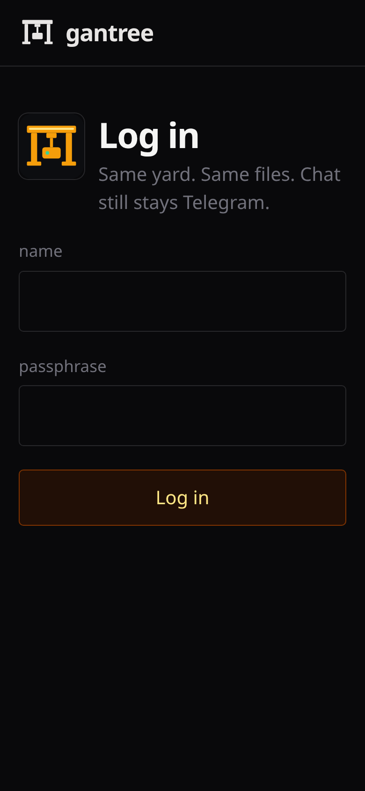
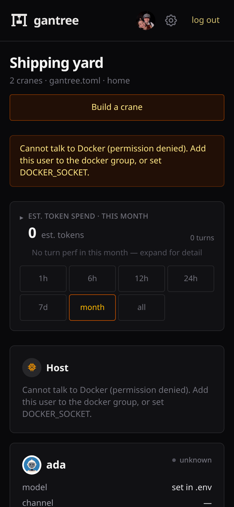
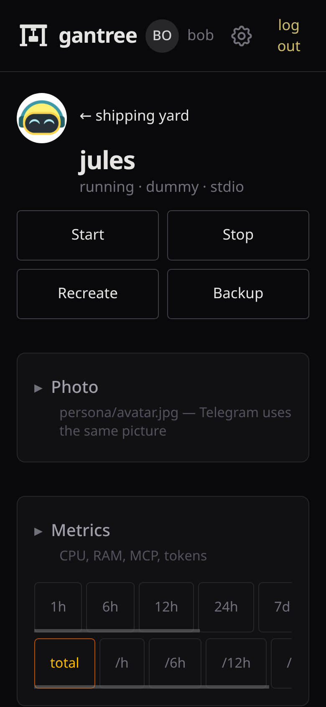

Console — the yard board
The product is the crane: ai-gantry. This page is the operator walk for this repo — the board that appears when you run more than one. Pitch and why the harness is worth operating live in the root readme. Install: install.md. Headless host + attach: headless.md. Login, profile, settings: operators.md. Door: security.md.
Chat stays Telegram (or Discord / Slack). Nothing here sits in a chat turn. Gantree reads Docker and files after the fact. It writes the same files the harness already understands.
browser → gantree (localhost | Tailscale | tunnel) → Docker + files
gantry gantry gantry
Agents open zero inbound ports. Bind 127.0.0.1 by default. If you
expose the console, you expose it to yourself.
First boot
Need Node 22. npm start (or compose) on the Docker host.
- Open
http://127.0.0.1:3000— first boot is/setup(one operator). - After that,
/login. - Sessions live in yard
gantree.db— not a crane’sdata/gantry.db.
Forgot the passphrase: stop, delete that sqlite file, start, run setup again. No email reset. Click your name for Profile; the cog is Settings. Roles, add/remove, and the stuck table: operators.md. What the door checks: security.md.



Board
A handful of named pets, not a Kubernetes dashboard. Each card: name, alive
or not, model, channel, published vs skipped MCP. Nags (dead process,
skipped grant, needs-auth) sit on the card — you do not have to open Tools.
Click through. Kit’s page is Kit — graphs and log, not a mixed fleet dump.
The host card (CPU bubble) is the Mini itself: CPU, RAM, and Docker network
(rx/tx), gantree.toml, yard sqlite, and how this process was started. People
(roles) stay on the cog.
Build a crane from the board (yard type first: home Mini or cloud VM).
Telegram: Create with BotFather copies /newbot, opens the chat, and
suggests {slug}_bot — paste the token it replies with. Upload a photo on the crane — it lands in persona/avatar.jpg, shows on
the board, and if the channel is Telegram the bot’s face updates too. On a
Telegram crane, Telegram (below the photo) can getMe the token, push
name / about / the / command menu (including /new), ask an allowlisted
chatter to tap /new (distill, then drop that thread — the yard cannot send
as her), and edit TELEGRAM_ALLOWED_USERS from numeric ids (slog user_id
after someone talks — not @username). Grant
a tool, recreate, watch that crane’s doctor. Message it on Telegram.
/tools is the crane’s mouth; this page is the operator’s.


Pin: shotah/ai-gantry:latest (Hub). Nested repos/ai-gantry is dev
only — do not copy .env or data/ from a private checkout.
Grant is how it stays personal
Long-horizon is useless if the container is “healthy” with zero tools and a
dead token. MCP is the grant. The UI is a structured editor of that
crane’s mcp.toml, not a second inventory.
- Toggle on → write
[[server]]. Recreate fetches bins into/data/binand reloads until/toolsshows the prefix. - Toggle off → omit from the manifest.
- “Needs auth” is a button (laptop hop or paste a code from
/authin chat).
Hand-editing mcp.toml still works. Your own binary:
custom-mcp.md.
Two files, not a catalog
| File | Who writes it |
|---|---|
PERSONA.md |
You — who it should be, who you are |
persona/avatar.jpg |
You — face on the board; Telegram bots get the same picture |
SELF.md |
The agent — voice, rituals, north-star aims that survive /new |
Gantree edits those files (and .env, and mcp.toml). It does not merge
memories across cranes. Isolation is the feature: one human, one bot, one
directory, one data/. Delete a tryout = delete that directory.
The seed on disk is lib/yard/crane/templates/PERSONA.example.md — keep it
identical to ai-gantry examples/persona/PERSONA.example.md. Replace from
template loads that file (agent Identity name from the slug). Inject
user (admin) copies selected profile fields into About you only; Save
still writes PERSONA.md. Recreate / rebuild never replace an existing
persona file.
Pull, don’t punch
The crane does not grow a /metrics port. The yard pulls (docker inspect, docker logs, sampled stats, JSON slog). Parse what the harness
already emits. Do not tax parallel tool calls so a chart looks nicer.
Samples and turns land in yard sqlite (7-day cap) so bouncing npm start
does not wipe Kit’s graphs. Mutations (grant, recreate, env, operators)
show who on a small events strip — not a SIEM. Admin also sees logins
and logouts there; other operators do not.
Doctor says why a tool is skipped (no binary / no key / no OAuth). Recreate
keeps the host user that owns data/ (never Distroless 65532),
network_mode, and extra binds.
Operator loop
npm start(or compose) on the Docker host- Board shows every gantry in
gantree.toml— alive or not - Click a card: per-instance graphs + visual logs. Host card: Mini CPU/RAM/net +
gantree.toml - Build a crane (yard type → slug → model → channel → profile)
- Grant / revoke MCP; files update; container recreates
- Watch that agent’s log and metrics until the grant is real
- Doctor says why something is skipped
The board has to work. The speed the human feels is still the crane.